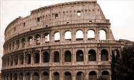

Hi, this is Jack with another oswd template. This time I tried to go for something that stands out thematically and visually. The two equal columns can be used for anything from blog posts to product descriptions, it kind of mimics old newspaper columns. Notice that the links above aren't necessarily meant for navigation, but simply a series of links. They could be links to external sites, special resources, etc. Use your imagination :]
You can also use the classes on the lists to change the tab colour. I did it 'cause it looks nice, but it can be used as an organization tool as well (help separate different types of links, etc)
I know the css is a bit cluttered, but I'm coming with a commented update soon.
Nam faucibus urna non arcu. Morbi vulputate hendrerit tellus. Donec porttitor vulputate mi. Praesent eros pede, molestie eget, posuere vitae, vehicula at, erat. Etiam accumsan elementum magna. Vivamus cursus pretium pede. Suspendisse eget lacus at nulla condimentum laoreet. Vivamus vulputate, nulla in tempor malesuada, justo lacus placerat lacus.  Sed eget turpis ut lacus congue blandit. Proin faucibus sodales ligula. Praesent placerat nibh ut risus. Vivamus faucibus urna et mi. Integer porta, odio ac fringilla nonummy, urna mi dapibus lorem, in porta erat nulla ut wisi. Quisque sed metus.